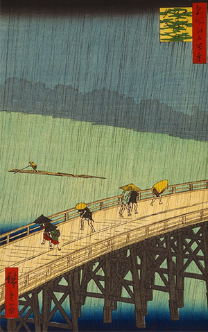
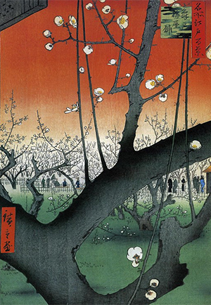

<!DOCTYPE html>
<html lang="en">
<head>
    <meta charset="UTF-8">
    <meta name="viewport" content="width=device-width, initial-scale=1.0">
    <meta http-equiv="X-UA-Compatible" content="ie=edge">
    <link rel="stylesheet" href="utagawa.css">
    <title>喜多川歌麿</title>
</head>
<body>

     <section class="first-paragraph">

            <h2 class="topic">生平</h2>
               <p>歌川廣重(1797年－1858年10月12)，原名安藤廣重。出生於消防員家庭，於1811年成為浮世繪大師
                        歌川豐廣的學生。廣重擅長描繪室外風景，作品呈現濃厚日本情調，尤其是風景畫中的「雨,雁,雪,月」
                        刻畫十分生生動細膩，故稱「廣重四絕」。
                   
                        「東海道五十三驛站」為廣重知名代表作品，緣起於與某藩主旅行於東海道驛站之所見所聞，並將沿途驛站
                        風光，於發行時一度造成轟動，可與北齋一同列為浮世繪風景畫之能手。
                    </p>


     </section>
     <br><br>

    

   

     <section class="one-third">

            <article>

                <h2> 大橋驟雨</h2>
                  <p> 「大橋驟雨」出版於廣重死前一年，算是他生平風景畫之絕響。有別於常見
                                橋樑圖仰角取景方式，此幅以由上而下觀看方式更能表現出行人對突如其來
                                的暴雨措手不及的狼狽模樣。大雨以細長黑線描繪，呈現出又大又急的氛圍。
                                畫家梵谷的「<a href="https://zh.wikipedia.org/wiki/%E5%A4%A7%E6%A9%8B%E5%AE%89%E5%AE%85%E9%A9%9F%E9%9B%A8#/media/File:Hiroshige_Van_Gogh_2.JPG">雨中的大橋/Bridge in the Rain</a>」就是對大橋驟雨的致敬。
                           

                  </p>

                
            
            </article>

              <aside>
                     
              </aside>
     </section>


     <section  class="one-third">
            
            <article>

                <h2>龜戶梅屋舖</h2>
                    <p> 此幅為當時知名的梅樹「臥龍梅」為範本進行描繪，據傳為當時知名的梅樹株。
                                整幅以巨大的梅樹為主體，對此凸顯 距離的遠近，主要色調為紅白綠，於灰黑色
                                梅樹的調合下，不相衝突，卻又襯托出主體。枝幹的描繪以及梅花的盛開方式，
                                有細緻，有粗獷，搖曳生姿，姿態萬千，別有一番風味。
                                畫家梵谷的「<a href="https://upload.wikimedia.org/wikipedia/commons/thumb/8/84/Vincent_van_Gogh_-_Bloeiende_pruimenboomgaard-_naar_Hiroshige_-_Google_Art_Project.jpg/1024px-Vincent_van_Gogh_-_Bloeiende_pruimenboomgaard-_naar_Hiroshige_-_Google_Art_Project.jpg?1506313717595">李樹開花/The Blooming Plum Tree</a>」即為致敬之作。
                            
                            

                    </p>
            
            </article>

                <aside>
                    
                </aside>
        </section>

      
          

              <div id="back-to-page" onclick="location.href='index.html'">點擊回首頁</div>

     
   
  


 


    
</body>
</html>